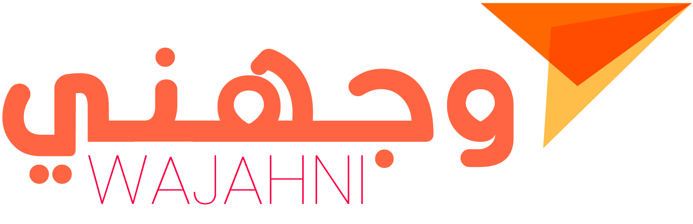
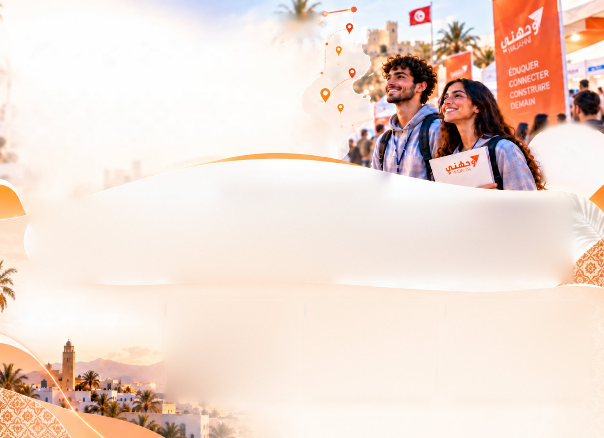

Leader de l’industrie
Notre statut de leader se traduit également par notre capacité à innover constamment, en lançant des initiatives adaptées aux tendances émergentes du secteur éducatif.

Ensemble, créons plus de valeur
Solutions, partenariats et opportunités
pour accompagner la réussite de vos clients
Année universitaire2026 – 2027
WAJAHNI en vidéo
Aftermovie WAJAHNI Caravan Tunis 2026
Découvrir la Caravan
WAJAHNI en chiffres
WAJAHNI est un écosystème dédié à l’orientation et à l’éducation, conçu pour rapprocher les établissements des nouvelles générations. À travers nos événements, notre plateforme digitale et nos solutions de communication, nous aidons nos partenaires à renforcer leur visibilité, valoriser leurs programmes, rencontrer directement les jeunes et leurs familles, et générer de nouvelles opportunités de recrutement. Notre ambition est de créer des connexions durables entre les acteurs de l’éducation et les talents de demain, partout en Tunisie.
Chiffres attendus
Pourquoi WAJAHNI
Notre statut de leader se traduit également par notre capacité à innover constamment, en lançant des initiatives adaptées aux tendances émergentes du secteur éducatif.
Nous avons su identifier les tendances et anticiper les évolutions du marché pour fournir des solutions sur mesure adaptées à chaque segment.
Nous nous engageons à offrir à nos partenaires une collaboration transparente, rigoureuse et basée sur des standards de qualité élevés.
Connectons l’éducation aux talents de demain

Nos partenaires
Un réseau de partenaires qui accompagne WAJAHNI chaque année.
Ensemble pour une Tunisie des talents

Témoignages partenaires
Des retours authentiques de nos partenaires qui nous font confiance chaque année.
Et bien d’autres partenaires nous font confiance
Influenceurs & partenaires médiatiques
Les créateurs de contenu et les médias qui portent la voix de WAJAHNI à chaque édition.
Et nos partenaires médiatiques
إحلم إمن إنجح

Des solutions complètes pour accompagner les jeunes, les établissements et les entreprises
à chaque étape de leur parcours.